Cast description
Cast is focused on desktop integration of all healthcare applications. It is not restricted to a specific data format and does not mandate the development of authorization scoping features.
In addition to distributing FHIRcast events, cast allows the following:
- Request data from applications.
- File transfer.
- Resource servers with long running jobs.
- Conferencing.
- IHE actor naming for advanced message routing.
-
Three additional subscription fields:
subscriber.product.namesubscriber.product.versionsubscriber.actors
-
Four additional event fields:
subscriber.namesubscriber.actortarget.actortarget.product.name
-
Additional hub-generated
subscription-removedevent when an application disconnects from the WebSocket.
How does the request work?
There is value to being able to obtain real-time information from other applications in the workflow. For example, knowing the “sceneview” status of an Image Display application or the current content of the report editor. This is different than what a FHIRcast hub would know since it relies on getting events to maintain its context which are not generated for each user action.
The cast request is technically a POST to the hub, same as a normal event publish. The only difference for the client is that the hub does not immediately respond with status code OK but forwards the request through the WebSocket connections to the relevant subscribers, collates their responses and sends the information back to the client in the POST response.
In practice, each application supports responding to a status-request event in less than 2 seconds. On start-up the application publishes a status-request that is forwarded to all applications in the user workflow. The hub collates the responses and then the application makes the best use of that information to display relevant information at launch.
The following animation shows the added resilience and data exchange that this feature provides.
Animation description: The user is reviewing a report on his tablet and walks over to the workstation to view the images. The application is launched without context. The application sends a request event to find which study to load from the worklist client and then queries the reporting client to get the measurements in the template. The measurements are used to populate annotation labeling drop-down in the image display tools.
Interactive step-by-step version — click to play each step.
{kind=link}
Click to play each step: walk to workstation, launch viewer, status-request poll, CT and report load, measurements, celebrate.
How does file transfer work?
Cast uses a notify then download model: the WebSocket
carries JSON and a payloadId per file; file bytes live in the
hub’s short-lived HTTP store and subscribers call
GET /api/hub/payloads/{payloadId} to get the files.
All binary uploads use one binary batch per publish —
multipart/related with a JSON manifest
(event.context.files[]) plus one HTTP part per file. That
covers DICOM slices, NIfTI volumes, and other binary-family events.
Before forwarding the JSON file metadata to the recipients over WebSocket, the hub adds the short-lived payloadId to each file metadata so that they can be downloaded. For DICOM files, the DICOM metadata of each file is therefore available before the download. Recipients can select which file they actually need and download those in the order they want. This provides something similar to DICOM association but at file level and with all info available instead of only SOP class UID and transfer syntaxes. For example, if a complete study is sent to TotalSegmentator, the handler script can choose to only download one series of thin slices; saving time and bandwidth.
The file and DICOM metadata information has to be created by the client publishing the event since the hub does not parse context data.
When the resource server has the same data access as the image display, like in the vtk-js worklist example where all data is online, the image display does not have to send the binary files. Only the JSON message is sent and the resource server downloads the input data itself and sends the result binaries back to the image display as shown below.
Resource servers (e.g. TotalSegmentator) receive metadata on the socket,
then fetch_all_payloads fills files[].data before
your onMessage script runs.
Full description: binary file transfer.
Interactive step-by-step diagram
Click to play each step: multipart POST, hub stores payloadIds, WebSocket notify, GET file bytes, payload TTL expires.
The hub filename policy is documented here.
How does conferencing work?
Normally each clinician’s viewer stays on its own session. Conferencing lets a host start a shared meeting — from the worklist, OHIF, VolView, Slim, or 3D Slicer — and invite colleagues who are already connected to the hub. For the duration of the meeting, when anyone in the group opens a study, changes slices, or shares annotations, the others see the same updates in real time.
Typical uses include tumor boards, case discussions, ultrasound review with a remote physician, and teaching sessions where the group should follow one presenter without logging into the same account.
The following animation shows the idea at a glance. For setup, APIs, and UI details, see conference-readme.md.
Animation description: The host starts a conference from the worklist and invites colleagues on OHIF, VolView, Slim, and 3D Slicer. The hub links their sessions. When the host opens a study, the same case appears on every participant’s screen and stays in sync as the group works together.
Interactive step-by-step version — click to play each step.
{kind=link}
Click to play each step: separate sessions, host invites, hub links, shared study open, synchronized navigation.
How do long running resources integrate?
Resource servers such as TotalSegmentator connect to the hub like any other cast client, but their work takes seconds or minutes instead of a single instant response. The viewer sends the input study with dicom-send (binary batch upload through the hub). While the server runs, it publishes status-update lines to the viewer’s job log so the user sees progress. When the job finishes, the server sends the result segmentation with another dicom-send and the viewer loads the overlay.
The following animation shows that three-step pattern. For job-status event details see status-readme.md; for file transfer mechanics see binary file transfer.
Animation description: VolView sends a study to TotalSegmentator with dicom-send. The resource server runs segmentation and publishes several status-update messages. It then returns the SEG result with a second dicom-send, which the image display loads.
